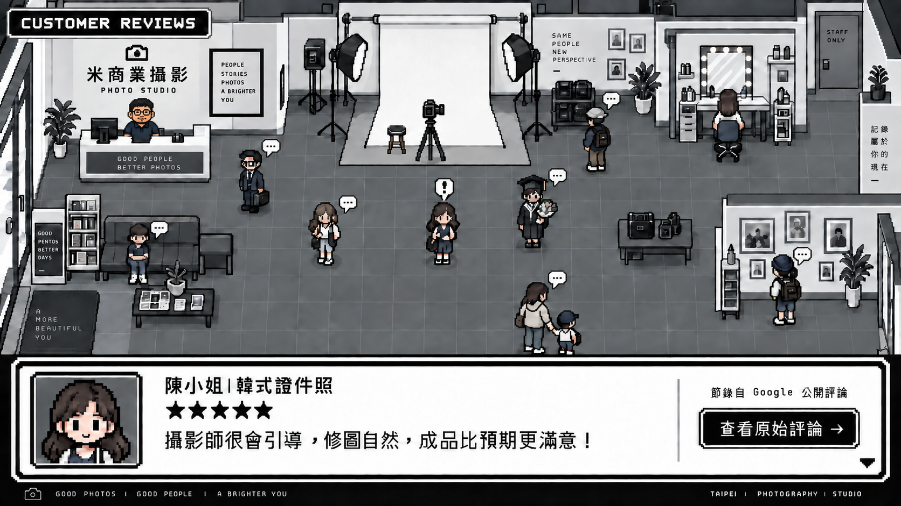

獨家修妝髮
將睫毛、瀏海、髮絲與妝容細節整合進修圖流程，不需另外加購。
TAINAN · PHOTO STUDIO
從證件照到人生紀念、從個人形象到品牌商業需求，以自然細緻的攝影與修圖，留下耐看的每一張照片。
YOUR STORY, IN EVERY PIXEL.
WHY MI PHOTO
我們相信，一張好的照片不只要好看，更要保留你的五官、神情與個人特色。拍攝前仔細溝通，拍攝中引導表情與姿勢，後製則修整妝容、髮絲與服裝細節。
了解我們如何完成一張照片 →將睫毛、瀏海、髮絲與妝容細節整合進修圖流程，不需另外加購。
保留真實五官與個人特色，不追求失真的過度修飾。
從表情、姿勢到拍攝角度，即使不習慣鏡頭也能安心完成。
OUR SERVICES
從個人紀念到品牌商業需求，依不同用途設計拍攝方式與成品。
其他服務
畢業照寶寶證件照情侶・朋友寫真家庭紀念・全家福產品攝影空間攝影THE PROCESS
從預約、拍攝到照片輸出，每一步都有人協助。
確認拍攝項目，預約方便的日期與時間。
使用化妝空間，整理頭髮、服裝與儀容。
攝影師先精選約 12 張，再由你挑選最自然的一張修圖。
查看完成照片，如有需要可再提出細節調整。
依照申辦證件所需的照片尺寸與規格完成輸出。
CUSTOMER REVIEWS
點選攝影棚裡的人物，看看客人留下的真實拍攝心得。

幾年前在中西區拍護照成果很滿意，推薦我自己的朋友也很滿意，當時印象就很深刻。剛好要換證店家搬來東區，地方更舒適，技術還是一樣好。適合人面對鏡頭的尷尬笑歪都可以修正、當下討論，修片速度真的快又可以當下拿到照片！太喜歡了，一生推～～
不用事先練習。攝影師會依你的臉型、身形與拍攝目的，引導姿勢、表情與視線。
不會。我們保留五官比例與個人特色，主要修整膚況、妝髮、衣服與畫面細節。
拍攝完畢後，電子檔會寄 e-mail，也可自備隨身碟儲存。